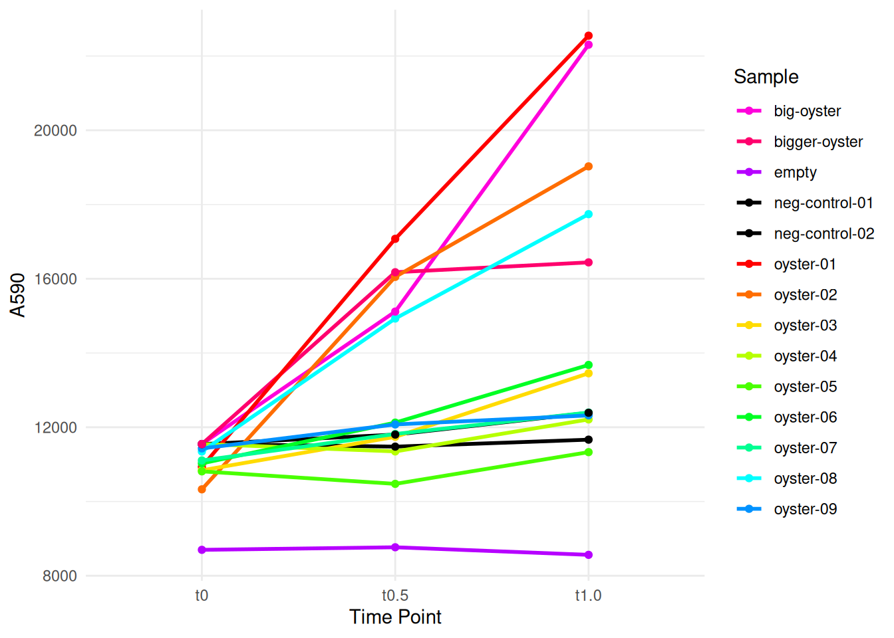
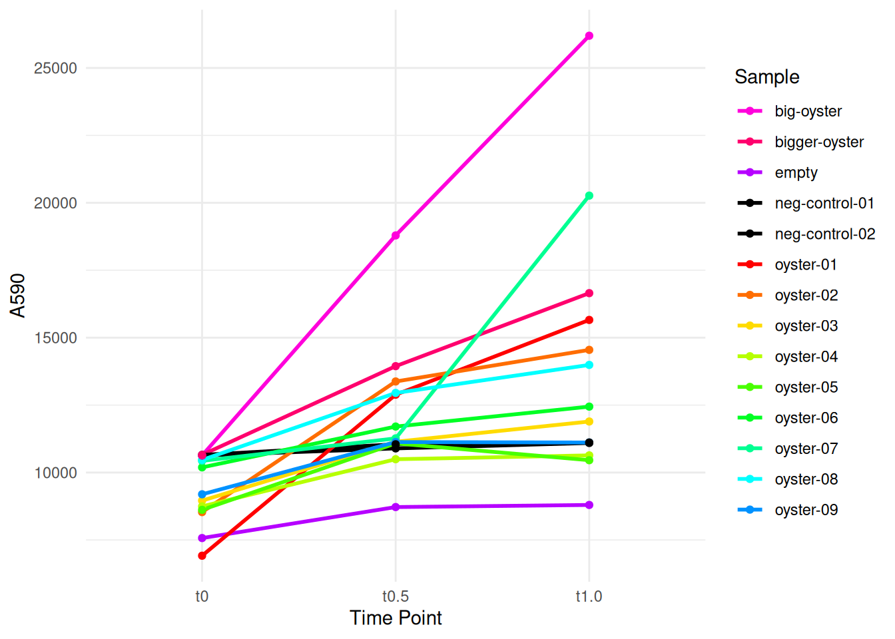
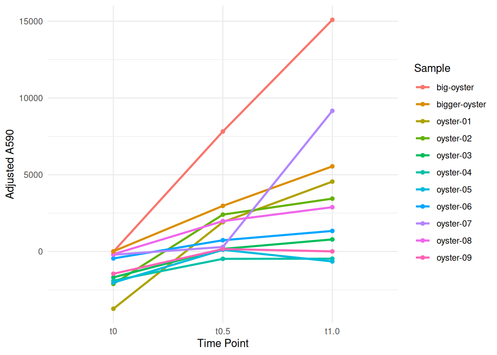

For this initial test, I followed the resazurin assay (commit 27441a7) shared by Steven, with the following modifications:
Non-sterile water/sea water was used.
No penn/strep/Fungizone used.
Procedure
Pre-stress
A total of nine small oysters were weighed, measured (using analog calipers). Two larger oyters were also weighed/measured and placed in their own glass Petri dishes. Fresh resazuring assay media was prepared. Two milliliters was added to 11 wells of the 12-well plate - the final position (C04) was left empty. Twenty milliliters was added to each Petri dish. These volumes ensured that the oysters would be submerged when added.
Fluorescence was measured on a Victor3 plate reader immediatley after adding resazurin assay media to the plate and dishes. The oysters were then distributed/added to the 12-well plate and dishes. Fluorescence was measured again after 0.5 and 1.0hrs. To measure the dishes, 2mL of assay media was transferred to wells A01 and A02 of a clean 12-well plate (the smaller of the two oysters in A01).
Heat stress @ 35oC.
As before, a fresh batch of resazurin assay media was made and distributed in a 12-well plate and two glass Petri dishes. The plate and the dishes were warmed at 35oC in a warm air incubator (Barnstead) for 45mins. The 12-well plate was covered; the Petri dishes were not. Fluorescence was measured on a Victor3 plate reader immediately before transferring oysters to the plate and dishes.
Oysters were transferred from the pre-stress plate/dishes to the pre-warmed plate/dishes. Fluorescence was measured again after 0.5 and 1.0hrs. To measure the dishes, 2mL of assay media was transferred to wells A01 and A02 of a clean 12-well plate (the smaller of the two oysters in A01).
Plate layout
Oysters in 12-well plate, a ruler, and oysters in two glass Petri dishes.
RESULTS
Output files
All files have been deposited in the project-gigas-carryover repo. Please visit that link to obtain files, as well as view the REAMDE.md file for descriptions of each file.
All measurements were compiled in the following file:
# Filter the data for treatment == "pre-stress"pre_stress_data <-subset(resazurin_data_long, treatment =="pre-stress")# Get unique sample namesunique_samples <-unique(pre_stress_data$sample)# Define colors for unique samplessample_colors <-ifelse(grepl("^neg-control", unique_samples), "black", rainbow(length(unique_samples)))# Create a named vector for color mappingsample_color_mapping <-setNames(sample_colors, unique_samples)# Create the dot plotggplot(pre_stress_data, aes(x = time_point, y = A590, color = sample)) +geom_line(aes(group = sample), linetype ="solid", size =1) +# Set linetype to solidgeom_point() +scale_color_manual(values = sample_color_mapping) +labs(x ="Time Point", y ="A590", color ="Sample", linetype ="Sample") +theme_minimal()

Plot pre-stress control-subtracted fluorescence
Code
# Step 1: Calculate the mean of A590 for each time point for "pre-stress" samples beginning with "neg-control"neg_control_means <- pre_stress_data %>%filter(grepl("^neg-control", sample)) %>%group_by(time_point) %>%summarise(mean_A590 =mean(A590))# Step 2: Subtract the mean calculated in step 1 from each corresponding time point for other samplesadjusted_data <- pre_stress_data %>%left_join(neg_control_means, by ="time_point") %>%mutate(adjusted_A590 =ifelse(!is.na(mean_A590), A590 - mean_A590, A590))# Step 3: Filter out values from samples "empty" and samples beginning with "neg-control"adjusted_data <- adjusted_data %>%filter(!grepl("^empty|^neg-control", sample))# Step 4: Create a dot plot using the adjusted valuesggplot(adjusted_data, aes(x = time_point, y = adjusted_A590, color = sample)) +geom_line(aes(group = sample), linetype ="solid", size =1) +geom_point() +labs(x ="Time Point", y ="Adjusted A590", color ="Sample") +theme_minimal()
Heat stress @ 35oC
Plot heat stress raw flourescence
Code
# Filter the data for treatment == "pre-stress"heat_stress_data <-subset(resazurin_data_long, treatment =="heat_stress")# Get unique sample namesunique_samples <-unique(heat_stress_data$sample)# Define colors for unique samplessample_colors <-ifelse(grepl("^neg-control", unique_samples), "black", rainbow(length(unique_samples)))# Create a named vector for color mappingsample_color_mapping <-setNames(sample_colors, unique_samples)# Create the dot plotggplot(heat_stress_data, aes(x = time_point, y = A590, color = sample)) +geom_line(aes(group = sample), linetype ="solid", size =1) +# Set linetype to solidgeom_point() +scale_color_manual(values = sample_color_mapping) +labs(x ="Time Point", y ="A590", color ="Sample", linetype ="Sample") +theme_minimal()

Plot heat stress control-subtracted fluorescence
Code
# Step 1: Calculate the mean of A590 for each time point for "pre-stress" samples beginning with "neg-control"neg_control_means <- heat_stress_data %>%filter(grepl("^neg-control", sample)) %>%group_by(time_point) %>%summarise(mean_A590 =mean(A590))# Step 2: Subtract the mean calculated in step 1 from each corresponding time point for other samplesadjusted_data <- heat_stress_data %>%left_join(neg_control_means, by ="time_point") %>%mutate(adjusted_A590 =ifelse(!is.na(mean_A590), A590 - mean_A590, A590))# Step 3: Filter out values from samples "empty" and samples beginning with "neg-control"adjusted_data_filtered <- adjusted_data %>%filter(!grepl("^empty|^neg-control", sample))# Step 4: Create a dot plot using the adjusted valuesggplot(adjusted_data_filtered, aes(x = time_point, y = adjusted_A590, color = sample)) +geom_line(aes(group = sample), linetype ="solid", size =1) +geom_point() +labs(x ="Time Point", y ="Adjusted A590", color ="Sample") +theme_minimal()

Combined bar plot
Calculate the mean of A590 for each time point for “pre-stress” samples beginning with “neg-control”
Code
# Step 1: Calculate the mean of A590 for each time point for "pre-stress" samples beginning with "neg-control"neg_control_means <- resazurin_data_long %>%filter(grepl("^neg-control", sample)) %>%group_by(time_point) %>%summarise(mean_A590 =mean(A590))str(neg_control_means)
# Subtract the mean calculated in step 1 from each corresponding time point for other samplesadjusted_data <- resazurin_data_long %>%left_join(neg_control_means, by ="time_point") %>%mutate(adjusted_A590 =ifelse(!is.na(mean_A590), A590 - mean_A590, A590))str(adjusted_data)
# Filter out values from samples "empty" and samples beginning with "neg-control"adjusted_data_filtered <- adjusted_data %>%filter(!grepl("^empty|^neg-control", sample))# Filter data for "pre-stress" and "heat_stress" treatmentsfiltered_data <- adjusted_data_filtered %>%filter(treatment %in%c("pre-stress", "heat_stress"))str(filtered_data)
# Reorder treatment levels# Makes pre-stress on left and heat-stress on rightdifference_data$treatment <-factor(difference_data$treatment, levels =c("pre-stress", "heat_stress"))# Get default ggplot2 colorsdefault_colors <- scales::hue_pal()(2)# Define custom fill colors with swapped treatmentscustom_colors <-c("pre-stress"= default_colors[2], "heat_stress"= default_colors[1])# Plot grouped bar plot with swapped treatments and default colorsggplot(difference_data, aes(x =reorder(sample, weight.mg), y = difference, fill = treatment)) +geom_bar(stat ="identity", position =position_dodge(width =0.9)) +labs(x ="Sample", y ="\u0394 A590 per mg") +# Unicode for capital delta is \u0394scale_fill_manual(values = custom_colors) +# Assign default ggplot2 colors to custom treatmentstheme_minimal() +theme(axis.text.x =element_text(angle =45, vjust =0.5, hjust =1)) +geom_segment(aes(x =0, xend =max(as.numeric(as.factor(difference_data$sample))) +1.0, y =-3.5, yend =-3.5), arrow =arrow(type ="open", length =unit(0.2, "inches")), color ="black") +# adds arrow along X-axisgeom_text(aes(x =0, y =-8.0, label ="Smaller"), hjust =0, vjust =0, color ="black") +geom_text(aes(x =max(as.numeric(as.factor(difference_data$sample))) +0.5, y =-8.0, label ="Larger"), hjust =1, vjust =0, color ="black")
DISCUSSION
Glancing at the grouped bar plots, it appears that the smaller oysters have a greater change in respiration during heat stress. Additionally, the two largest oysters, possibly unintutively, exhibit the lowest changes in respiration. However, my guess is that these larger oysters have the ability to remain closed for longer durations than the smaller oysters. As such, they remained closed after being handled and placed in the resazurin assay media. This would explain low respiration rates and minimal response to heat stress.
This idea is further supported by the fact that we see that as oysters get larger, their respiration rates are lower than when unstressed. It’s possible that the heat stress triggered a response for them to keep closed and, in turn, reducing respiration. While the smallest oysters are unable to keep their shells closed for lengthy periods of time, requiring them to open and respire at higher rates during heat stress.